Una pieza única, hecha de su foto.
Mírala en 3D, gratis, antes de encargarla.

Cuatro formatos.
- FiguraLa figura sola, de 8 a 15 cm.Desde $17.990
- AlcancíaCon ranura para monedas.+$7.990
- ÁnforaGuarda sus cenizas.+$14.990
- Cuadro 3DEn relieve, dentro de un marco.+$11.990
Elige la talla de su figura.
Cuatro tallas y cuatro formatos, todos desde su foto.

| Código | Talla | Alto | En blanco | Pintada |
|---|---|---|---|---|
| FG-S08 | Talla S | 80 mm | $17.990 | +$12.990 |
| FG-M10 | Talla M, la recomendada | 100 mm | $22.990 | +$14.990 |
| FG-L12 | Talla L | 120 mm | $31.990 | +$18.990 |
| FG-XL15 | Talla XL | 150 mm | $45.990 | +$24.990 |
Su figura, a la medida exacta.
De 8 a 15 cm, medida contra una taza de café.
Alto 100 mm
Base
5 cm
10 cm
15 cm

S, 8 cmM, 10 cm
L, 12 cm
XL, 15 cm
Taza, 9 cm